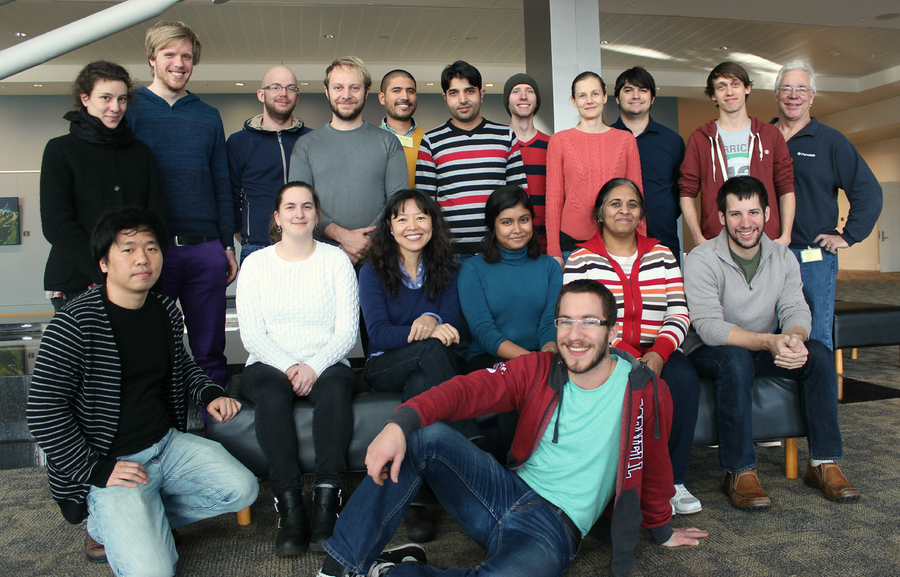

USPAS Accelerator Physics Course
(second half of this
course)
January 26-30, 2015, Hampton, VA

Background Material
Here is
the link to the last time I taught this course (January 2014). It
has all the lectures from that class, as well as some useful links to
supplemental material.
Lectures
- Monday, January 26
- Tuesday, January 27
- Longitudinal Motion 1 (pptx, pdf)
- Longitudinal Motion 2 (pptx, pdf)
- Floquet Transformations and Resonances (pptx,pdf)
- Wednesday, January 28
- Thursday, January 29
- Friday, January 30
- Special Topic - Light Sources (pptx, pdf)
- Special Topic - Overview and Tricks of the Trade (pptx, pdf)
Homework, Labs, and
Final
(last modified February 3, 2015 by Eric Prebys)